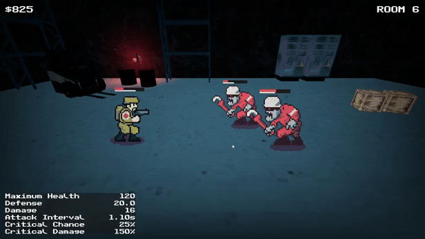
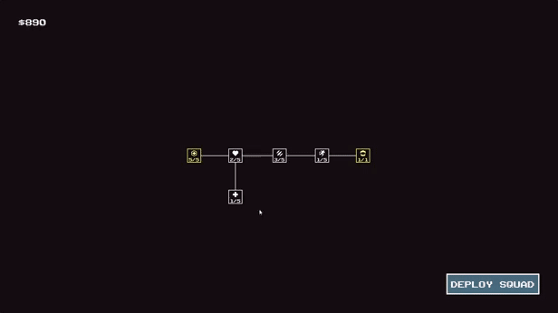

Systems Are Fun
June 6, 2026
I've been working on a new prototype.
The idea is simple: an autobattler where you move from room to room, kill enemies, die, spend points on upgrades, and start over. Each run gets a little further until you survive long enough to fight the area's boss. Defeat the boss, move on to the next area. Simple.

The funny thing is that I play games too.
These days I have a lot less time for gaming than I used to. Long RPGs and 100-hour adventures rarely make it onto my list anymore. As a husband, father to a lovely toddler (and a second kid on the way), and someone with a full-time 9-5 job, I find myself gravitating towards shorter experiences.
Games like Nodebuster, Doomfields, and Loop Hero are perfect for that. I get a little hit of dopamine, make some progress, and call it a night.
I wanted this prototype to be the same way. Small in scope. Something I could actually finish.
I've been working on it for about two weeks now, and that's when the familiar thoughts started creeping in.
"What if I added treasure rooms like Doomfields?"
"What about event rooms like Slay the Spire?"
Designing and implementing those systems sounded fun. Honestly, they were fun. But every new idea pushed the project further away from being playable.

Before long, I realized I was building systems instead of building a game.
I've been a software engineer for nearly thirty years, so I suppose this comes naturally. I enjoy solving technical problems. I enjoy finding the right architecture, the right design pattern, the reusable and extensible solution.
My brain immediately jumps to questions like:
"What if I want equipment?"
"What if I add workbenches?"
"What if I want a crafting system like The Last of Us?"
Thinking about those systems is exciting. Building them is satisfying.
But every now and then I need to remind myself of something important:
A good architecture doesn't necessarily make a good game.
Players don't care that my code is elegant. They care whether the game is fun.
So the treasure rooms are gone. The event rooms are gone too. The game is simpler than it was a week ago. And I think it's better for it.